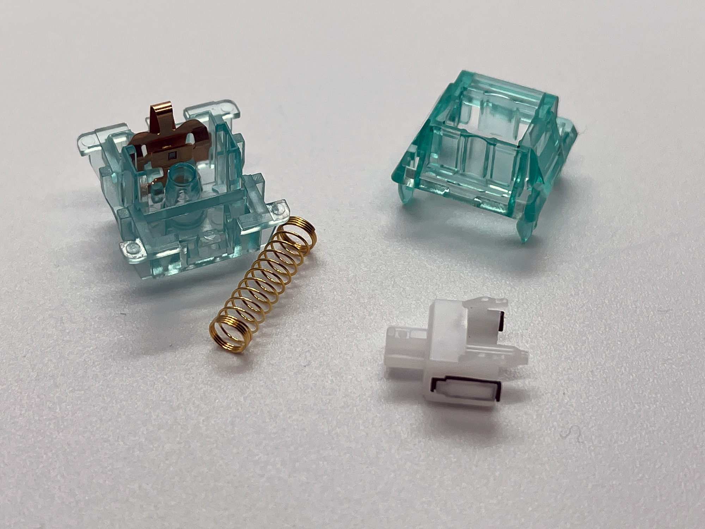

Durock T1 Shrimp switches have the same medium to large tactile bump as the T1 switches (in fact, besides the colors they are exactly the same!) but they also have a sound dampener included on the switch stem. This makes the Shrimp switch very quiet and perfect for an office enviornment. The sound dampener is the black material on the white switch stem.
Here is a sound test with the Durock T1 Shrimp switch:
Go back